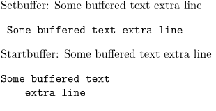

Contents
Summary
The environment
\setbuffer ... \endbuffer
is used for filling a buffer.
Settings
Description
This command is very much like
\startbuffer
except it takes a less careful (more low-level) approach to collecting the content. It does not pay attention to the
\setupbuffer
[strip=yes]
setting; multiple spaces are always collapsed into a single space. Because of this, it is practically useless when
\typebuffer
will be used.
But if the buffer content is fairly well-behaved, must only be typeset, and speed is of the essence, then this is a useful alternative to \startbuffer.
Examples
Example 1
-
\setupbuffer[strip=yes] \setbuffer[mybuf] Some buffered text extra line \endbuffer Setbuffer: \getbuffer[mybuf] \typebuffer[mybuf] \startbuffer[mybuf] Some buffered text extra line \stopbuffer Startbuffer: \getbuffer[mybuf] \typebuffer[mybuf]
- 